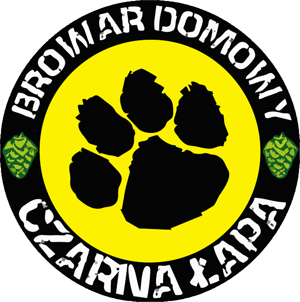

Kontakt
Warki
Polish Black IPA 17,3°
Brandy Old Ale 19,2°
Bourbon Vanilla Coffee FES 15,8°
Hop Tart 12,5°
Rye Berliner Weisse 8,2°
Bourbon Red Saison 13,9°
Saison 13,7°
Habanero Imperial Stout 26,1°
Imperial Black Rye IPA 19,2°
Bourbon Vanilla Imperial Porter 19,5°
Orange Choco Sweet Stout 14°
Flanders Red Ale 15,3°
Porto Imperial Stout 32°
Imperial India Pale Ale 18°
Cherry Sour Ale 11,3°
Raspberry Funky Black Ale 13,5°
Belgian Sour Ale 13,9°
Wai-iti SMASH APA 13,9°
Simcoe SMASH APA 13,5°
Smoked Rye Tripel 18,8°
Black IPA SH Equinox 17,3°
Belgian Blond Ale 2.0 16,1°
Belgian Pale Ale 2.0 12,5°
Red AIPA SH Azacca 15,5°
Imperial Hoppy Brown Ale 18,7°
Whisky Extra Stout 2.0 18°
Lavender Rye Milk Stout 14,1°
Christmas Rye Ale 18,2°
Funky AIPA 14,6°
Black Weizen 11,7°
Whisky Oaked Brown Ale 12,9°
German Hop Weizen 13°
American Brett Pale Ale 14,2°
Belgian Black IPA 15°
American Wheat 2.0 11,5°
Belgian Dubbel IPA 16,4°
Belgian Blond 15,3°
Imperial India Pale Ale 19°
American India Pale Ale 16°
Cascadian Dark Ale 15°
Witbier IPA 14,7°
Belgian Pale Ale 13°
Whisky Extra Stout 16°
Hefeweizen 12,5°
American Wheat 11°
American Cascade Pale Ale 13°
Ocean India Pale Ale 15,5°
Warto odwiedzić
Wrocławski Festiwal Dobrego Piwa
Wrocławska Inicjatywa Piwowarska
Wrocławski Szlak Piwny
PiwoWarZone
piwo.org
Zaopatrzenie
Twój Browar